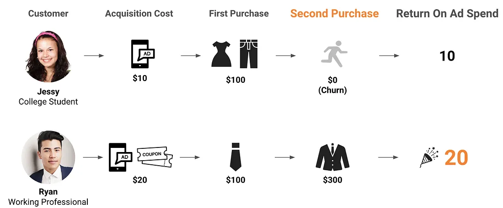
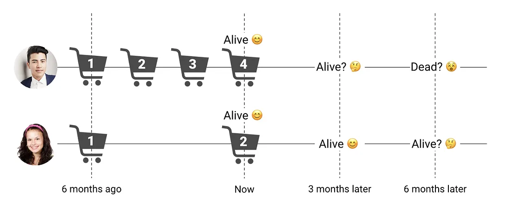
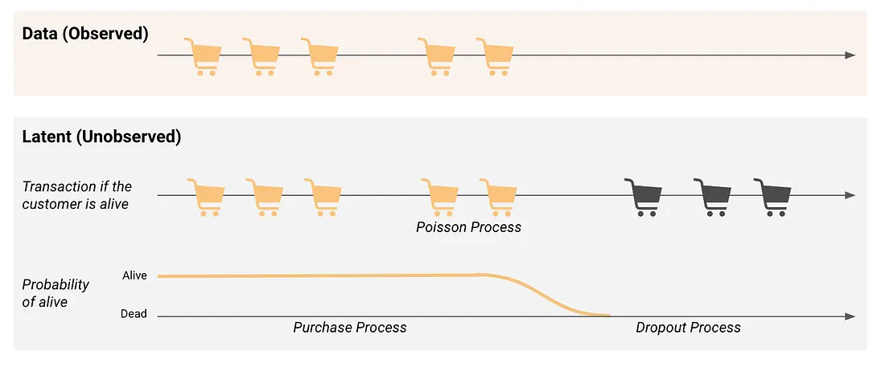
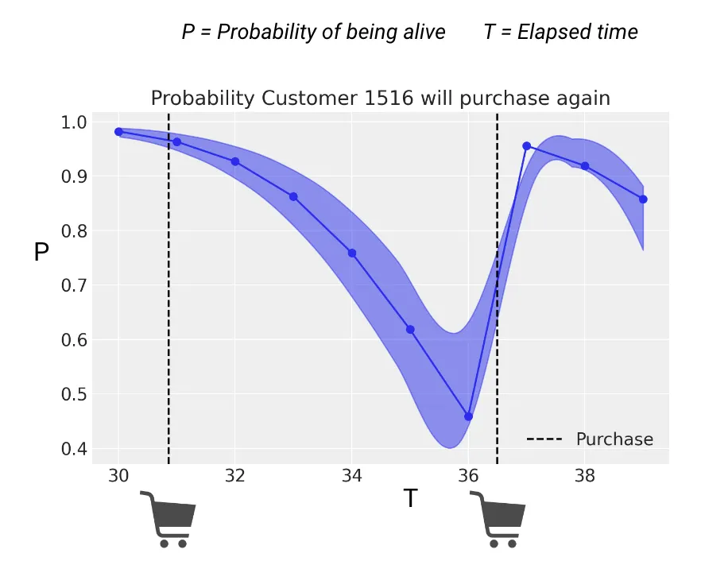
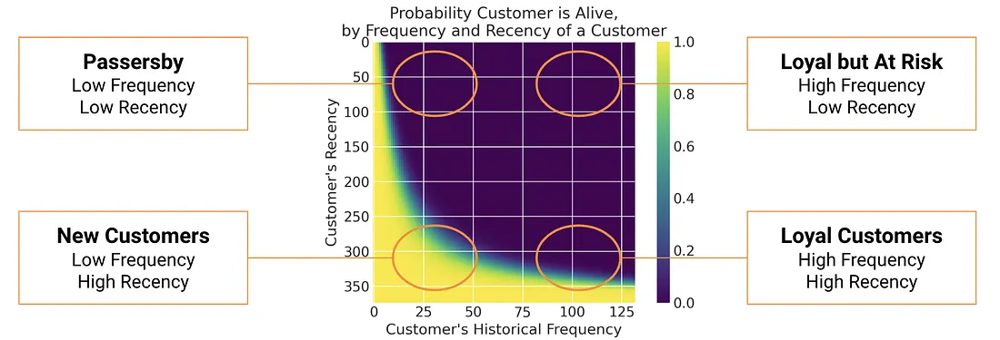

4.2 Modélisation de la valeur vie client
À propos de la version française
Cette page est une traduction par IA de la version anglaise de Marketing Science in Python. La version anglaise fait foi et prévaut en cas de divergence. Le code, les notebooks et le texte intégré aux images restent en anglais. Lire la version anglaise
La plupart des équipes marketing se concentrent sur le coût par acquisition (CPA), souvent employé indifféremment avec le CAC (coût d’acquisition client) : un CPA plus faible signifie une meilleure campagne. La valeur vie client (CLV), souvent appelée LTV dans les contextes de l’analytique et du SaaS, reformule la question. Au lieu de demander à quel coût minimal vous pouvez acquérir un client, elle demande combien chaque client rapporte au fil du temps, puis utilise cette réponse pour fixer le plafond de CPA.
Ce chapitre montre comment prédire la CLV à l’échelle individuelle à l’aide de modèles probabilistes BTYD (BG/NBD + Gamma-Gamma avec PyMC-Marketing), et comment transformer ces prédictions en décisions budgétaires.
Pourquoi la CLV change la décision
Prenons une marque de mode en ligne qui acquiert des clients grâce à des publicités et à des bons de réduction. Supposons que deux segments dominent le parcours de conversion : les étudiants et les actifs. Voici ce que donne le premier achat :
- Étudiant : coût d’acquisition de $10, achat de $100 → ROAS de 10×.
- Actif : coût d’acquisition de $20, achat de $100 → ROAS de 5×.

À en juger par le ROAS du premier jour, le choix paraît évident : consacrer davantage de budget aux étudiants. Mais la perspective à long terme inverse la conclusion. Les étudiants cessent d’acheter après la première transaction, si bien que leurs dépenses sur l’ensemble de la relation client restent proches de $100. Les actifs reviennent et dépensent davantage au fil du temps, avec des dépenses moyennes de $400 sur l’ensemble de la relation. Soudain, le segment « cher » est en réalité la bonne affaire.

C’est cette lacune que comble la modélisation de la CLV. Sans elle, tous les clients se voient attribuer le même plafond de CPA, ce qui revient à payer trop cher pour les clients à faible valeur et trop peu pour ceux à forte valeur. Avec elle, le plafond s’ajuste à la valeur prédite, de sorte qu’un même budget permet d’acquérir davantage de clients pertinents.

La CLV est utile à chaque étape : à l’acquisition pour dépenser davantage sur les segments à forte valeur, à la croissance pour accorder la priorité aux clients à forte valeur en matière de service et d’offres exclusives, et à la fidélisation pour concentrer les campagnes de rétention là où les calculs les justifient réellement.
Les trois objectifs d’un modèle de CLV en découlent directement : (1) prédire la valeur future à l’échelle individuelle, (2) identifier ce qui distingue les clients à CLV élevée et (3) intégrer ces deux éléments aux décisions budgétaires marketing.
Pourquoi la formule traditionnelle ne suffit pas
La formule classique de la CLV comporte trois composantes :
\[ \text{CLV} = \text{Average Order Value} \times \text{Purchase Frequency} \times \text{Customer Lifespan} \]
Pour une marque de mode dont les clients dépensent $100 par commande, achètent 4 fois par an et restent fidèles pendant 3 ans : \(\text{CLV} = 100 \times 4 \times 3 = \$1{,}200\). Simple, intuitive et utile pour estimer les ordres de grandeur de l’activité, mais trop grossière pour prendre des décisions à l’échelle du client. Elle échoue sur trois points.

Limite 1 : tous les clients ne se ressemblent pas. Une moyenne sur l’ensemble de la clientèle représente mal les deux extrémités de la distribution :
| Groupe de clients | Nombre de clients | CLV moyenne | Ventes totales |
|---|---|---|---|
| Clients ordinaires | 90 | $100 | $9,000 |
| Gros acheteurs | 10 | $10,000 | $100,000 |
| Total | 100 | $1,090 | $109,000 |
La moyenne de $1,090 existe dans les données et ne décrit personne. Il vous faut une CLV à l’échelle individuelle.
Limite 2 : des dates de premier achat différentes. Un client qui a commencé à acheter il y a un an dispose d’une année complète de données observables ; celui qui a commencé il y a trois mois en a beaucoup moins. Les décomptes bruts de fréquence confondent « faible engagement » et « arrivée récente » si l’on ne tient pas compte de l’ancienneté.

Limite 3 : mort ou vivant ? Dans les abonnements, l’attrition est observable : le client résilie. Dans le commerce de détail et le commerce en ligne, elle ne l’est pas. Le fait de considérer un client comme « vivant » dépend de ses habitudes propres. Une personne qui achète chaque mois et ne donne plus signe de vie pendant trois mois constitue un signal d’alerte ; une absence de trois mois chez quelqu’un qui achète tous les six mois est normale.

Ces trois problèmes ont la même origine : une moyenne unique ne peut pas représenter une clientèle hétérogène. La solution consiste à modéliser la CLV à l’échelle individuelle, ce que fait précisément BTYD.
BTYD : le cadre BG/NBD + Gamma-Gamma
La modélisation « acheter jusqu’à disparaître », ou Buy-Till-You-Die (BTYD), assemble deux modèles probabilistes :
- BG/NBD prédit la probabilité qu’un client soit encore actif et son nombre de transactions futures.
- Gamma-Gamma estime le montant moyen de ses commandes.
Multipliez les deux, appliquez une actualisation dans le temps, et vous obtenez une CLV individuelle accompagnée d’un intervalle de crédibilité autour de chaque estimation.

Modèle BG/NBD
Le modèle BG/NBD suppose deux processus latents dans le cycle de vie d’un client :
- Processus d’achat. Tant que le client est vivant, les achats suivent un processus de Poisson de taux \(\lambda\).
- Processus de départ. Après chaque achat, le client a une probabilité \(p\) de devenir définitivement inactif.

Les paramètres \(\lambda\) et \(p\) varient tous deux d’un client à l’autre. Une structure bayésienne hiérarchique prend cette variation en compte : les valeurs de \(\lambda\) suivent une loi Gamma dans la clientèle, celles de \(p\) suivent une loi Bêta. Le modèle apprend les régularités à l’échelle de la population tout en produisant des estimations individuelles.
Une conséquence utile : la probabilité qu’un client soit vivant évolue au fil du temps. Elle diminue à mesure que le délai depuis le dernier achat s’allonge, puis remonte brusquement dès qu’un nouvel achat survient.

Pour une dérivation complète comprenant le modèle graphique et la fonction de vraisemblance, voir Fader et al. (2005).
Modèle Gamma-Gamma
Le modèle Gamma-Gamma estime le montant moyen des commandes. Il utilise une hiérarchie bayésienne à deux niveaux : une loi Gamma par client (ses habitudes de dépenses propres) et une autre loi Gamma sur l’ensemble de la clientèle (la variation entre clients).
Pour une dérivation complète, voir Fader et Hardie (2013).
BTYD suppose un contexte non contractuel : l’attrition n’est jamais observée, le modèle la déduit donc des intervalles entre les achats. Dans les contextes contractuels comme le SaaS et les abonnements, l’attrition correspond à un événement explicite de résiliation, et le modèle Bêta-Géométrique décalé (sBG) exploite directement ce signal ; PyMC-Marketing le propose sous le nom ShiftedBetaGeoModel (voir le notebook sBG). Pour expliquer les facteurs d’attrition avec des covariables dépendantes du temps, utilisez l’analyse de survie (modèle à risques proportionnels de Cox). Enfin, si vous disposez de variables comportementales riches et d’une chaîne d’apprentissage automatique en production, une régression par apprentissage automatique (par exemple LightGBM) sur une cible à horizon fixe peut surpasser BTYD en précision ; avant de changer d’approche, mettez ce gain en balance avec le volume de données nécessaire, l’effort de réentraînement et de déploiement, la maintenance de la chaîne de préparation des variables, l’explicabilité et la quantification de l’incertitude fournie. Une approche hybride pratique consiste à utiliser les sorties de BTYD (probabilité d’être actif, nombre attendu d’achats) comme variables d’entrée du modèle d’apprentissage automatique ; les scripts complémentaires dans lightgbm-companion/ présentent une implémentation LightGBM de bout en bout.
Implémentation avec PyMC-Marketing
PyMC-Marketing repose sur PyMC et remplace la bibliothèque lifetimes (désormais en mode maintenance). Sa fonctionnalité phare est la quantification intégrée de l’incertitude : chaque estimation de CLV s’accompagne des bornes d’un intervalle de plus haute densité (HDI), ce qui permet de voir le degré de confiance du modèle pour chaque client.
Le modèle de CLV n’a besoin que des transactions de vente : identifiant client, date de transaction, montant de transaction. Deux à trois ans d’historique suffisent généralement.

Données et synthèse RFM-T
Nous utilisons le jeu de données de distribution alimentaire Dunnhumby “The Complete Journey”, également utilisé dans le notebook de segmentation traditionnelle (sec4.1_traditional_segmentation.ipynb). Cela permet de reprendre les mêmes quelque 2 500 ménages de la chaîne de segmentation traditionnelle pour la CLV ; après le nettoyage habituel (suppression des transactions de montant négatif et des lignes de quantité nulle) et la construction des indicateurs RFM-T, le notebook complémentaire ajuste BG/NBD sur l’ensemble des 2 500 ménages, tandis que le modèle de dépenses Gamma-Gamma utilise les 2 497 ménages ayant effectué au moins un achat répété.
| Indicateur | Définition |
|---|---|
| Récence | Durée entre le premier achat d’un client et son achat le plus récent |
| Fréquence | Nombre d’achats répétés (nombre total d’achats moins un) |
| Montant | Montant moyen des achats répétés d’un client (le premier achat est exclu) |
| Ancienneté | Durée entre le premier achat d’un client et la fin de la période d’étude |
Dans la section 4.1, la récence désignait le nombre de jours depuis le dernier achat. Dans la convention BTYD, suivie par rfm_summary de PyMC-Marketing, il s’agit de la durée entre le premier achat d’un client et son achat le plus récent ; une valeur plus élevée signifie donc une activité plus récente.
import pandas as pd
from datetime import datetime, timedelta
from pymc_marketing import clv
# Load Dunnhumby transactions and convert DAY counter to datetime
# (see companion notebook for the full pipeline)
BASE_DATE = datetime(2012, 1, 1)
data["date"] = data["DAY"].apply(lambda d: BASE_DATE + timedelta(days=int(d) - 1))
data_summary = clv.utils.rfm_summary(
data, "CustomerID", "date", "TotalSales", time_unit="D"
)
data_summary.index = data_summary["customer_id"]Notebook complémentaire : sec4.2_clv_pymc_marketing.ipynb ajuste les modèles BG/NBD et Gamma-Gamma, estime la CLV et analyse les segments démographiques sur le jeu de données Dunnhumby.
Voir sur GitHub
Ajustement et estimation de la CLV
# --- BG/NBD: purchase frequency + P(alive) ---
bgm = clv.BetaGeoModel()
bgm.fit(data=data_summary)
# --- Gamma-Gamma: average order value ---
nonzero = data_summary.query("frequency > 0 and monetary_value > 0")
gg_data = nonzero[["customer_id", "frequency", "monetary_value"]]
gg = clv.GammaGammaModel()
gg.fit(data=gg_data)
# --- Combined CLV estimate (DCF with 1% monthly discount) ---
clv_estimate = gg.expected_customer_lifetime_value(
transaction_model=bgm,
data=data_summary[[
"customer_id", "frequency", "recency", "T", "monetary_value"
]],
future_t=120, # 120 months = 10 years
discount_rate=0.01,
time_unit="D",
)La sortie comprend non seulement des estimations ponctuelles, mais aussi les bornes d’un HDI (intervalle de plus haute densité). Dans cette API, future_t se mesure en mois, tandis que time_unit="D" indique au modèle que les données RFM-T en entrée sont mesurées en jours. Le modèle indique son degré de confiance pour chaque client, mais uniquement en ce qui concerne le calendrier des achats : la distribution a posteriori des dépenses est résumée par sa moyenne avant l’actualisation ; considérez donc ces bornes comme une limite inférieure de l’incertitude réelle.
L’horizon relève d’une décision, pas d’une valeur par défaut. Ce jeu de données couvre environ 23 mois ; une projection à 120 mois s’étend donc sur une durée d’environ cinq fois la fenêtre observée. L’estimation ne s’emballe pas, car BG/NBD intègre le départ des clients dans la projection, mais ce taux de départ est lui-même estimé à partir de ces 23 mois. Le notebook complémentaire applique à nouveau l’actualisation à la même distribution a posteriori sur des horizons de 3, 5 et 10 ans. Sur ce jeu de données, le classement des clients varie à peine entre les trois horizons : le ciblage fondé sur le rang est donc insensible aux horizons testés ; l’estimation médiane à 10 ans représente environ 2,23 fois celle à 3 ans, si bien que toute conversion de la CLV en plafond monétaire doit préciser l’horizon utilisé.
Matrice de probabilité d’être actif
La matrice de probabilité d’être actif permet de voir rapidement ce que le modèle BG/NBD a appris. La récence sur un axe, la fréquence sur l’autre, la couleur représentant la probabilité d’être actif. Rappelons que la récence correspond ici à la définition BTYD du tableau ci-dessus, la durée entre le premier et le dernier achat : une récence élevée signifie donc que le client achetait encore récemment, à l’inverse du sens donné à ce terme dans le RFM marketing. Les quatre coins racontent quatre histoires : les acheteurs réguliers fidèles (fréquence élevée, récence élevée, achats fréquents et activité toujours présente), les fidèles à risque (fréquence élevée, récence faible, ils achetaient beaucoup puis ont cessé de donner signe de vie), les clients de passage (fréquence faible, récence faible, un ou deux achats juste après l’acquisition puis plus rien) et les clients à historique limité (fréquence faible, récence élevée, trop peu d’achats pour être certain, mais le plus récent est frais ; le modèle leur accorde donc le bénéfice du doute ; la figure appelle ce coin les nouveaux clients).

CLV en chiffre d’affaires → CLV en bénéfice
Le modèle Gamma-Gamma estime le chiffre d’affaires par transaction. Pour rendre la CLV utile aux décisions budgétaires, convertissez le chiffre d’affaires en bénéfice :
\[ \text{CLV}_{\text{profit}} = \text{CLV}_{\text{revenue}} \times \text{Gross Margin} \]
Si les marges varient fortement d’une catégorie de produits à l’autre, calculez des marges propres à chaque client à partir de son historique d’achat plutôt que d’utiliser un taux uniforme.
Combiner segments et CLV
Rapprochez le segment_id du chapitre sur la segmentation (chapitre 4.1) de l’estimation de CLV de chaque client. Vous obtenez ainsi le tableau opérationnel vers lequel cette partie progresse : de quel type de client il s’agit, quelle est sa valeur et ce que l’entreprise devrait faire pour lui.
Les données démographiques peuvent toujours aider à décrire ou à atteindre un segment, mais la décision repose principalement sur le croisement segment comportemental × valeur prédite. Le notebook complémentaire joint les estimations de CLV au fichier Dunnhumby hh_demographic.csv pour dresser le profil de chaque segment selon des dimensions démographiques telles que le revenu : utile pour choisir la création publicitaire et le canal, moins pour fixer le budget.
Une pratique de production rapportée par PyMC Labs : tester des modèles Gamma-Gamma propres à chaque segment lorsque les distributions de dépenses diffèrent sensiblement entre segments, et conserver un modèle de transaction commun à l’ensemble de la population. Construisez les segments sur la seule période de calibration et comparez-les au modèle commun sur des données hors échantillon ; sinon, les segments dérivés du montant des achats partagent de l’information avec le modèle de dépenses qu’ils alimentent.
Mettre la CLV en pratique
Une fois que vous disposez d’un clv_estimate par client, trois applications deviennent accessibles presque sans effort supplémentaire. Ces approches fonctionnent avec n’importe quel score de CLV : les systèmes en aval n’ont besoin que d’un identifiant client et d’un nombre.
- Plafonds de CPA pour les enchères publicitaires
Fixez le CPA maximal comme une fraction de la CLV prédite en bénéfice :
\[ \text{Allowable CPA} = \text{CLV}_{\text{profit}} \times \text{Target acquisition ratio} \]
Si un segment a une CLV prédite en bénéfice de $200 et que votre ratio cible d’acquisition est de 33 %, le CPA maximal est de $66. Pour enchérir en situation d’incertitude, utilisez une borne inférieure prudente de la CLV prédite en bénéfice plutôt que la moyenne. De nombreuses plateformes publicitaires peuvent intégrer des signaux de valeur pour des enchères fondées sur la valeur ou des règles d’audience, mais l’implémentation précise dépend de la plateforme.
- Alertes d’attrition pour le CRM
Signalez les clients dont la probabilité d’être actif baisse de plus de 30 points en 30 jours. Le signal réside dans la vitesse de variation, pas dans le niveau absolu. Le cas d’un client dont cette probabilité est passée de 0,85 à 0,40 en un mois est bien plus urgent que celui d’un client dont elle reste stable à 0,35 depuis six mois. Le premier se désengage ; le second achète simplement peu souvent.
- Prévisions par cohorte pour la direction financière
La direction financière planifie selon des cycles budgétaires, pas sur toute la durée de vie des clients : agrégez donc les estimations individuelles de CLV par cohorte d’acquisition et projetez le chiffre d’affaires à 12, 24 et 36 mois. Incluez les bornes HDI pour que la direction financière sache qu’il s’agit d’estimations probabilistes et non d’objectifs fixes. C’est ainsi que vous répondez à la question « Quel est le retour attendu de nos dépenses d’acquisition du troisième trimestre ? » sans obliger le directeur financier à apprendre BG/NBD.
Comparez le chiffre d’affaires prédit au chiffre d’affaires réel par cohorte à 3, 6 et 12 mois. Si le ratio s’écarte de plus de ±20 %, réentraînez le modèle. Vérifiez aussi si les prédictions de CLV présentent un biais à l’encontre de groupes protégés : les modèles entraînés sur des segments insuffisamment servis perpétueront ce biais en prédisant une CLV plus faible et en fixant des enchères d’acquisition plus basses.
Points clés à retenir
- La CLV remplace une cible de CPA uniforme par des dépenses proportionnelles à la valeur de chaque client. La moyenne existe dans les données et ne décrit personne.
- Dans les contextes non contractuels, BG/NBD modélise les achats futurs et Gamma-Gamma les dépenses, à partir des seules données transactionnelles. Chaque client dispose d’un intervalle de crédibilité : fondez donc vos enchères sur une borne inférieure prudente plutôt que sur la moyenne.
- Convertissez la CLV en chiffre d’affaires en CLV en bénéfice avant de l’utiliser pour fixer un plafond de CPA, et précisez l’horizon : l’estimation médiane à dix ans représente environ 2,23 fois celle à trois ans, même si le classement varie à peine.